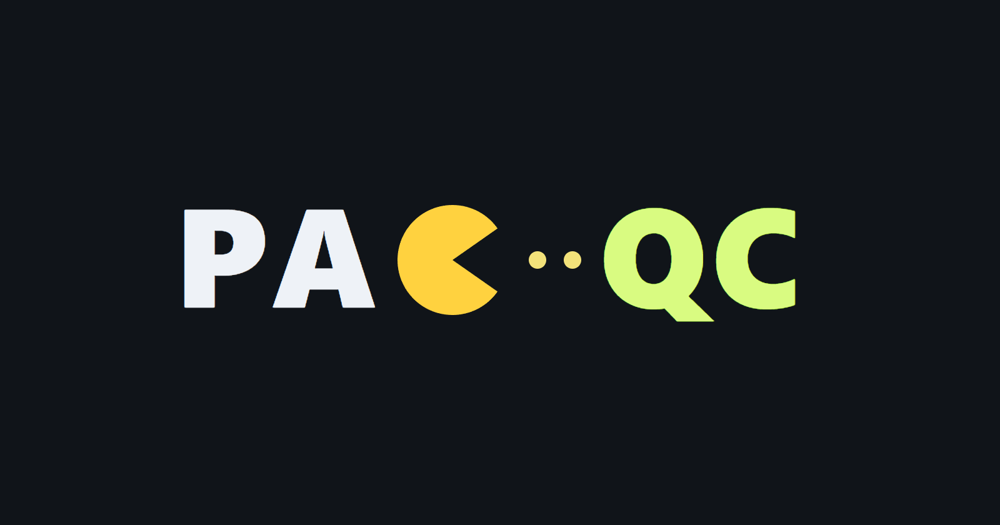
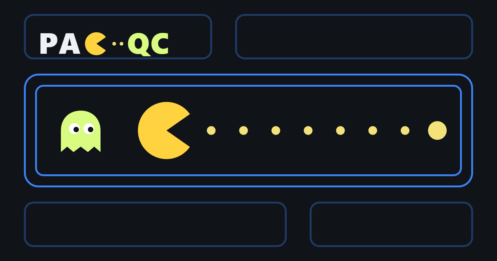
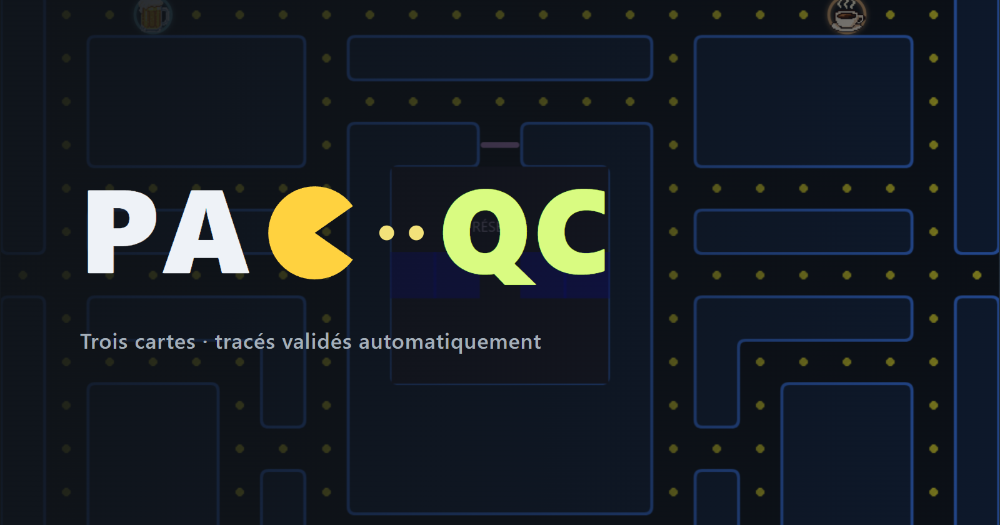
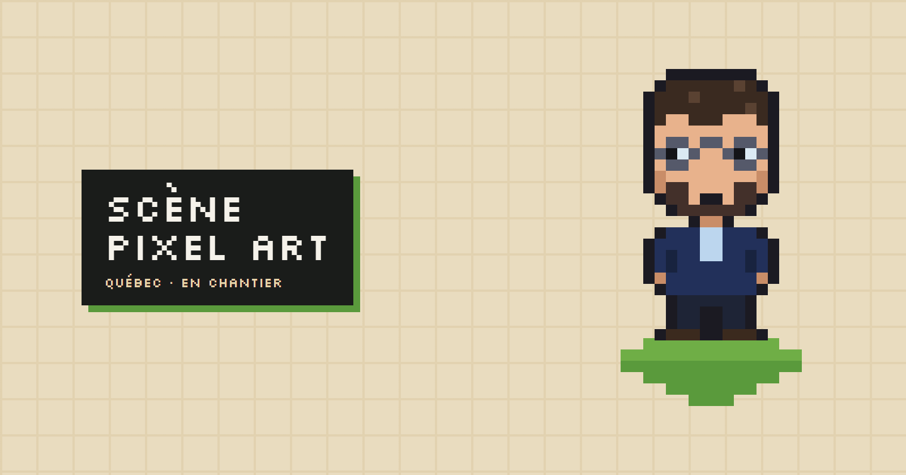
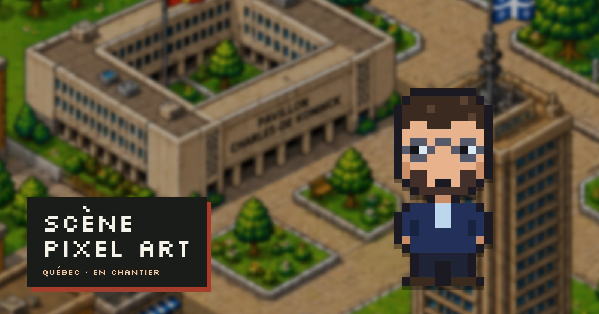
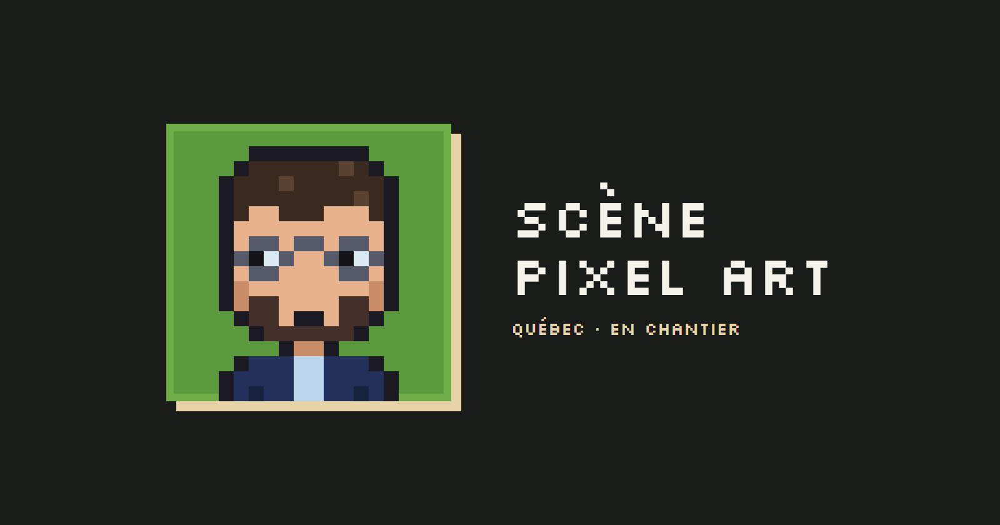
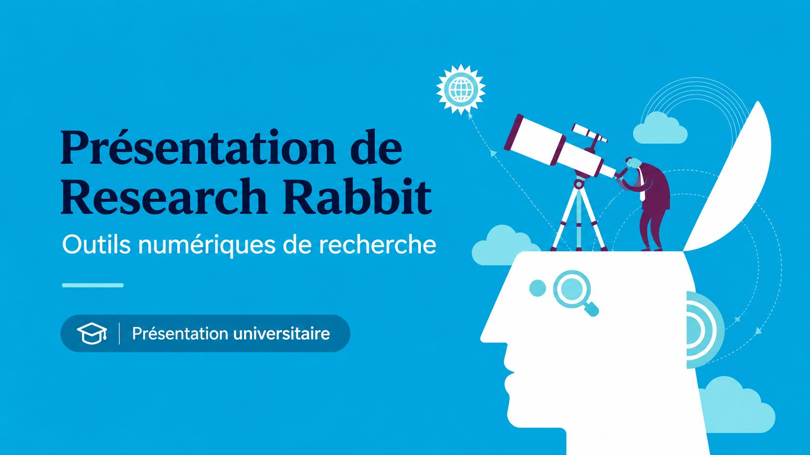

Proposition 1
Le logotype seul
« PA », le personnage à la place du C, deux pastilles, puis « QC ».
Pour : le plus net, lisible jusqu'à l'icône. Contre : ne montre pas le jeu lui-même.
Chaque jeu garde son identité : ses couleurs, ses personnages, sa matière. Le site, lui, impose seulement un cadre commun (même proportion, même légende, même filet) pour que la grille des travaux reste cohérente. Toutes les images ci-dessous sont fabriquées à partir des ressources réelles des jeux ; aucun fichier d'origine n'a été modifié.
Un personnage dessiné, le nom intégré ; aucun visage, aucun sigle, aucun logo tiers.

Ce qui change

Proposition 1
« PA », le personnage à la place du C, deux pastilles, puis « QC ».
Pour : le plus net, lisible jusqu'à l'icône. Contre : ne montre pas le jeu lui-même.

Proposition 2 · recommandée, à l'essai dans V2bis
Un couloir aux doubles murs bleus du jeu, le personnage, les pastilles, un fantôme ; le logotype en petit.
Pour : dit « jeu d'arcade » et « PacQC » à la fois, reste lisible en vignette mobile. Contre : dessin réinterprété, pas une capture du jeu.

Proposition 3
Le logotype et une ligne de description sur la vraie carte du jeu, assombrie.
Pour : montre le vrai labyrinthe. Contre : plus chargée, la ligne de texte devient illisible en petit.
Le logotype à trois tailles

Un petit personnage en pixel art inspiré de vous, pour donner un visage au projet.
Le personnage
_refonte/outils/visuels-projets.mjs : une lettre par pixel, facile à retoucher (coiffure, couleur de veste).
Proposition 1
L'avatar sur son carreau isométrique, le titre en lettres pixel, sur un fond pierre.
Pour : la plus nette en petit. Contre : on ne voit plus la ville, qui est le sujet du projet.

Proposition 2 · recommandée, à l'essai dans V2bis
La ville en arrière-plan, floutée comme une profondeur de champ ; l'avatar net au premier plan.
Pour : la plus mémorable, et le flou évite le conflit entre deux tailles de pixel. Contre : image plus lourde (134 Ko).

Proposition 3
Le buste dans un cadre pixel : un logo pour la page du jeu, ou une icône.
Pour : utilisable comme logo. Contre : en vignette, peu d'information sur le projet.
Recommandation : PacQC proposition 2 et Scène proposition 2 dans la grille des travaux (déjà à l'essai dans V2bis). Le logotype PacQC et la pastille de la Scène peuvent servir de logos sur les pages des jeux eux-mêmes.
Une présentation universitaire (LaTeX, Beamer) : deux façons de la montrer dans la grille.

A · votre vignette, dans la grille de V2bis
Pour : grand titre lisible en petit, mention « Présentation universitaire » explicite. Contre : un aplat bleu vif qui attire l'œil plus que les autres vignettes.

B · la vraie première page, en tête de la fiche
Pour : authentique, et dans la logique « Note de breffage » (un document posé sur le papier, comme le graphique R). Contre : le titre de la diapositive devient petit en vignette mobile.
Un jeu d'arcade au bureau : ses fantômes portent des sigles, ses bonus sont la bière et le café.
Ce qui ne va pas aujourd'hui

Piste A
Un cadrage serré sur le labyrinthe et la réserve des fantômes, sans interface ni joueur.
Pour : immédiatement lisible comme un jeu. Contre : ne montre qu'une carte sur trois.

Piste B
Les quatre fantômes présentés comme un générique, au-dessus du logo d'origine.
Pour : la plus mémorable, l'humour du jeu en une image. Contre : les sigles visent des réalités administratives et l'un reprend le logo de Teams (marque déposée) ; à éviter devant un employeur public si le clin d'œil peut être mal reçu.

Piste C · recommandée
Les trois labyrinthes côte à côte, comme des plans d'architecte.
Pour : montre un travail de conception (trois tracés, validés automatiquement), sans visage ni marque. Contre : moins drôle que la piste B.
Une ville de Québec en isométrie, où l'on promène un personnage.
Ce qui ne va pas aujourd'hui
Piste A · recommandée
Un cadrage sur le pavillon Charles-De Koninck (Université Laval), agrandi deux fois sans lissage.
Pour : on voit le soin du dessin, et le lieu parle de votre parcours. Contre : la ville entière n'est plus visible.
Piste B
La place centrale avec le personnage jouable, à l'échelle du jeu.
Pour : dit tout de suite « on peut s'y promener ». Contre : le personnage est petit en vignette ; à animer au survol si on la retient.
Piste C
Un logo en lettres pixel (Silkscreen) posé sur la scène, comme l'écran-titre d'un jeu.
Pour : donne enfin un nom visible et une identité propre au projet. Contre : une police de plus à charger ; le cartouche reprend le rouge du site, à remplacer par une couleur du jeu si on veut l'en détacher.
Recommandation : PacQC en piste C et la Scène en piste A pour la grille, car elles montrent le travail sans dépendre d'un visage, d'une marque ou d'une blague d'initiés. Le cartouche-titre de la Scène (piste C) peut servir de logo sur la page du jeu lui-même. Ces pistes ont servi d'essai en phase 5, puis ont cédé la place aux propositions ci-dessus.